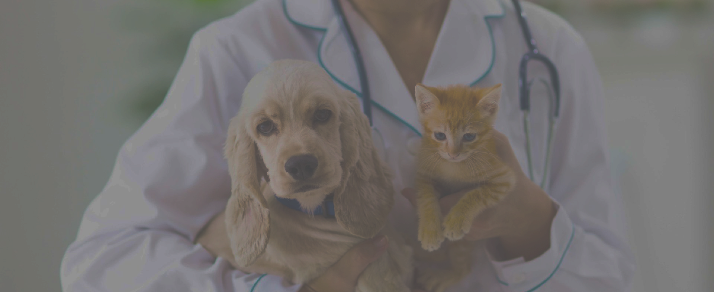
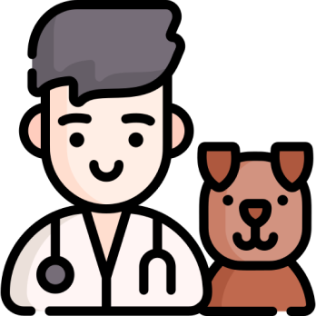

+7 (xxx) xxx-xx-xx
услуги
цены
контакты
услуги
Вызвать врача на дом
Мы осознанно не выезжаем на дом. Этому есть ряд объективных причин:
Квалифицированная помощь животному должна оказываться в полном объеме
(у людей неотложная помощь транспортирует пациента в больницу для
обследования и назначения лечения), а мы не оказываем услуг по
транспортировке животных; В домашних условиях может не быть условий
для объективной оценки…
УЗИ
(Стоимость УЗИ указана с учетом расходных материалов) УЗИ мочевого
пузыря, простаты и матки проводится при наполненном мочевом пузыре.
УЗИ печени и обзорное брюшной полости проводится натощак (на менее 8
часов) и требует предварительной подготовки: за 2 дня до исследования
исключить из рациона газообразующие продукты, а также давать внутрь
Активированный уголь…
Травматология, Ортопедия, Металлоостеосинтез.
Ортопедия, травматология конечностей, металлостеосинтез. (Стоимость
операций указана с учетом стоимости анестезии, медикаментов и
расходных материалов. Дополнительные манипуляции и анализы
оплачиваются дополнительно). (При проведении металлоостеосинтеза у
средних и крупных собак с использованием пластин, стоимость
конструкций оплачивается дополнительно). Ампутация конечности
(утилизация ампутированной конечности оплачивается отдельно, по весу):
Кошки и собаки мелкие Собаки…
подробнее>>